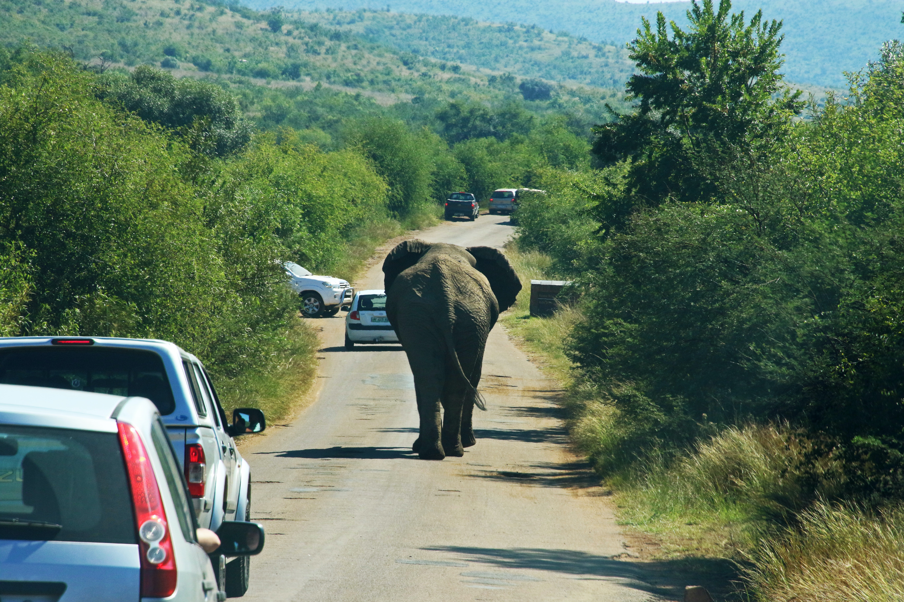

Projects
Microfactories: How To Reprogram Bacteria
 From biologically derived drugs to laundry detergent, more and more of the products we encounter in our day-to-day lives contain protein components. Have you ever thought about how these proteins are made on a great scale? Usually, this is done through the transformation of microorganisms like bacteria or yeast. Bacterial transformation is the process in which bacterial cells take up foreign genetic material (e.g. DNA) from their environment and incorporate it into their own genome. This allows proteins, which are encoded by DNA, to be produced in great amounts. This process is an important tool in genetic engineering, because it allows scientists to study protein function, structure and interactions. Importantly, proteins produced by bacterial transformation can also be used in therapeutic and industrial applications, including vaccine production and the development of insect-resistant crops.
From biologically derived drugs to laundry detergent, more and more of the products we encounter in our day-to-day lives contain protein components. Have you ever thought about how these proteins are made on a great scale? Usually, this is done through the transformation of microorganisms like bacteria or yeast. Bacterial transformation is the process in which bacterial cells take up foreign genetic material (e.g. DNA) from their environment and incorporate it into their own genome. This allows proteins, which are encoded by DNA, to be produced in great amounts. This process is an important tool in genetic engineering, because it allows scientists to study protein function, structure and interactions. Importantly, proteins produced by bacterial transformation can also be used in therapeutic and industrial applications, including vaccine production and the development of insect-resistant crops.
In this project, we will use molecular biology techniques to reprogram the bacteria Escherichia coli and have it produce green fluorescent protein (GFP). We will purify the produced protein and take advantage of its fluorescence to observe how different experimental conditions affect protein production in our bacterial factories. By doing so, we will develop a better understanding of good laboratory practice and a range of important skills like media preparation, working under sterile conditions, gel electrophoresis and purifying proteins with chromatography. In the end, we will use GFP as a case study in online bioinformatics databases to get a greater appreciation of how gene sequence, protein structure and biological function affect one another.
Irma Komljenovic
University of Aberdeen; School of Medicine, Medical Sciences and Nutrition
Irma is a third-year molecular biology undergraduate student at the University of Aberdeen. She developed her love of science in high school by attending different summer schools (including S3!). She is most interested in the ability to modify and optimise assays to give answers to specific hypotheses and accommodate new discoveries in the field. In her free time, Irma enjoys jigsaw puzzles, embroidery, going on hikes and thrifting.
Elephant on the road - how do deep models handle the unexpected?
 Deep models are computing systems designed to imitate the function of a human brain. They are usually trained on large amounts of data to perform different types of statistical analysis. They have shown tremendous potential for application in many different fields such as image analysis, text analysis, or medicine. Still, the good performance of deep models in controlled environments might not necessarily translate to their success in real-world settings. Take, for example, deep models intended for autonomous driving. They will most likely be trained to recognize the most common elements of driving scenes, such as cars, people, road tracks, etc. So, what happens if an elephant suddenly appears in front of the car? Our models can only classify it into one of the known classes. We could modify our training data to include elephants, but ultimately it is impossible to foresee every possible scenario. The next best thing is to equip deep models with the ability to say they do not know the correct answer. This ability of deep models to recognize potential failure is critical for their safe deployment in real-world applications.
In this project, we will train simple image classification models, test their performance on expected inputs, and see how they respond to unexpected data. We will discuss potential methods for detecting model failure and see how we can compare different models with respect to their ability to detect anomalies. We will look at possible modifications to the model and training procedure that increase robustness to unusual input. Finally, we will combine the acquired insights to produce better classification models.
Petra Bevandic
University of Zagreb, Faculty of Electrical Engineering and Computing
Petra is a last-year PhD student and teaching assistant at the Faculty of Electrical Engineering and Computing at the University of Zagreb. Her research is in the field of image analysis, primarily of road driving images. She focuses on improving model robustness for real-world applications. Currently, she is trying to figure out how to automatically connect visual concepts across multiple datasets to train general-purpose models. Outside of work, she enjoys painting, classic movies, books, yoga, and pub quizzes.